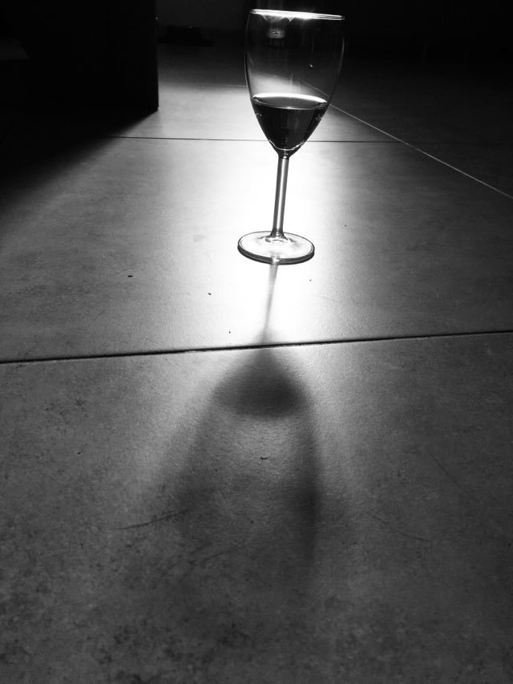

O mně

jednou budu moci říci:
vítejte na mých webových stránkách
jsem věčnej snílek.. "tak ňák ofšem"
samotář plný nadějí, očekávání
asi hodinu se snažím nastavit velikost obrázku, marně...
díky czechitas můj profesní život získá nový obzor ve světě IT.
sedím u PC řadu let, pracuji na pozici personalisty a toužím po změně..
je mi 36 let, ráda čtu, toulám se po horách, lenoším u filmu a posedím s přáteli.
